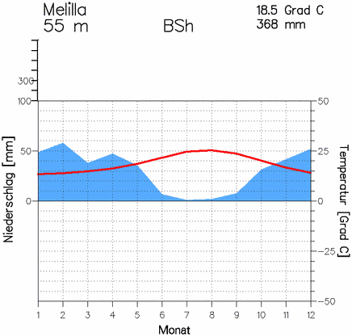
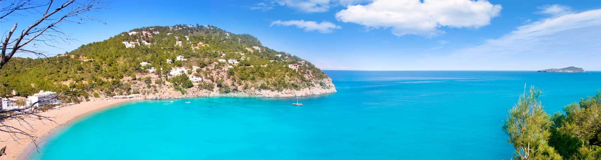

Voor het zeeklimaat heb ik Melilla gekozen voor het middelands zeeklimaat. Dat deed ik omdat dat me de ideale plek leek voor zo een klimaat. Melilla ligt in Spanje maar wel al aan Afrika vast. Die plek had ik gekozen omdat die plek me een goeie plek leek en Spanje een heel leuk land is. Monat = maand en niederschlag = neerslag. De rode lijn zijn de temperaturen en het blauwe de neerslag.
 